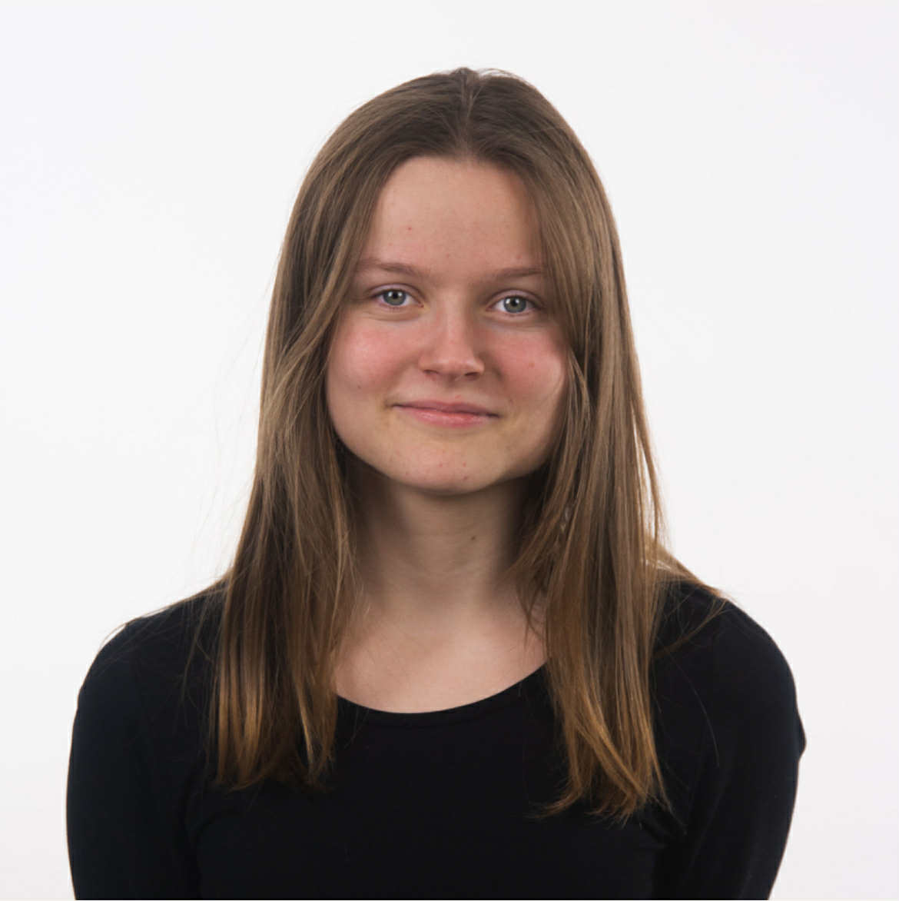
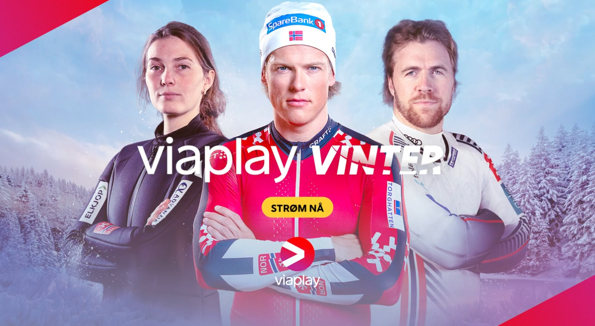
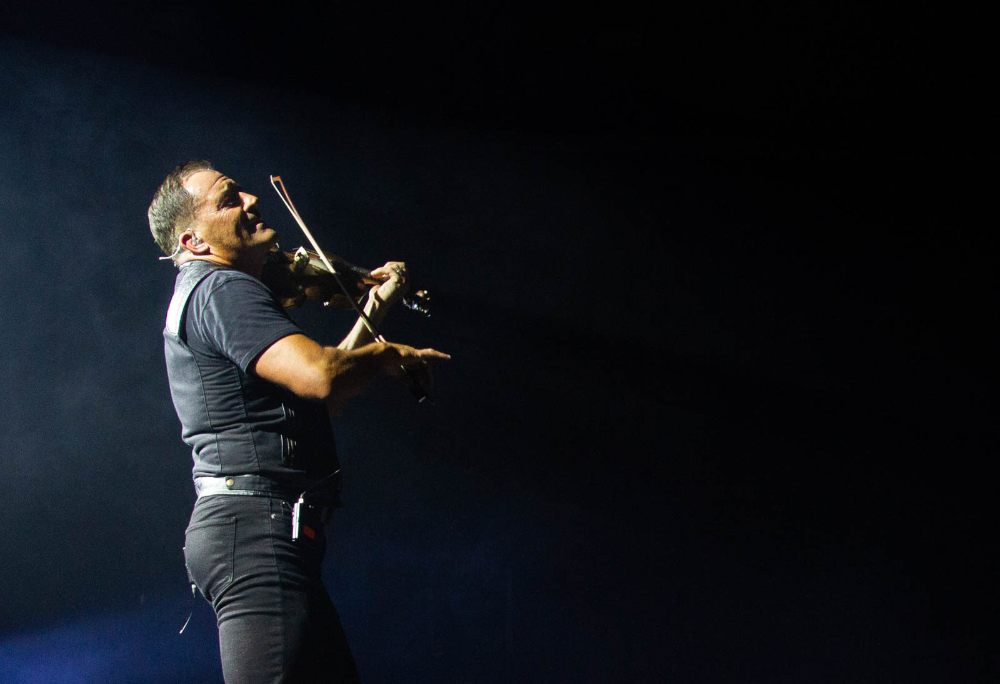
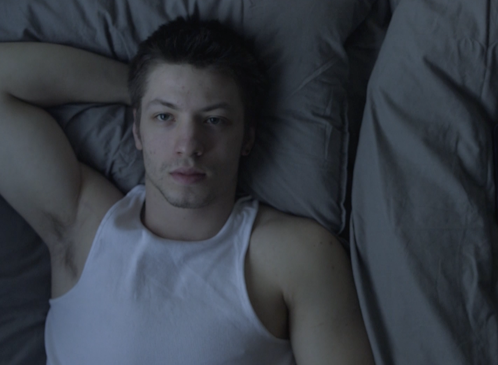
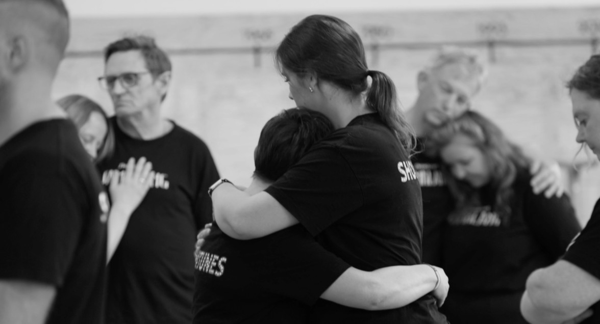
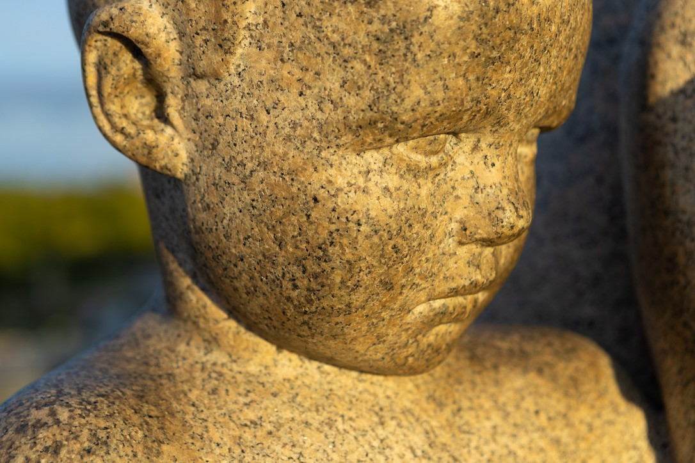
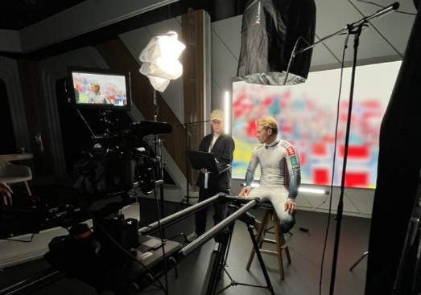

Jeg liker å jobbe praktisk, enten det handler om rigging, kamera eller klipp. Jeg kan mye forskjellig, men er fortsatt i sterk utvikling, og målet mitt er å lære så mye som mulig og bygge erfaring gjennom en lærlingplass. Jeg er ikke redd for å spørre når jeg lurer på noe. Det er sånn jeg lærer best.


Som praktikant i Viaplay Sport bidrar jeg med alt fra rigging og opptak til ulike produksjonsshots, men jobbet mest med å redigere promoer fra start til slutt inkludert arkivsøk, musikkvalg, enkel grafikk og levering

Eiker Rock er Mjøndalens egen musikkfest der lokale talenter og store artister deler scenen, her fikk jeg sjansen til å fange energien fra scenekanten som fotograf

Dette er noen kortfilmer jeg produserte gjennom året mitt på Danvik folkehøyskole, blant annet hovedproduksjonen Et siste ord, samt Rose og Havaristen.

Dette er prosjekter jeg har gjort. Jeg har filmet og klippet musikkvideoene selv.

Her finner du et utvalg av mine personlige fotoprosjekter – blant annet bilder fra en Johnny Cash‑tribute, klatring for DNT og en fototur i Vigelandsparken.

Et utvalg bilder fra ulike produksjoner og situasjoner bak kamera – små glimt av alt som skjer før, mellom og etter opptak.